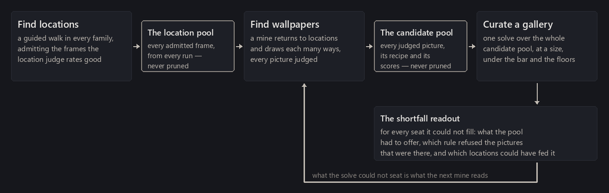
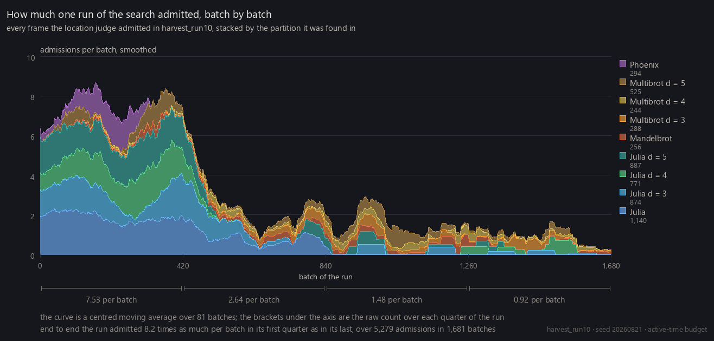

The pipeline has three parts, and every page before this one described one of them. Finding good locations is a guided walk through each fractal family, hunting for locations (a family, a center in the complex plane, a width) with nothing yet said about color. Finding good wallpapers is mining: returning to those locations and drawing each one many ways, in many rendering modes and palettes, with every judged picture kept. Gallery curation is the solve: one pass that chooses a whole gallery out of every picture ever mined. Two stores connect the parts (a pool of locations that only ever grows, and a pool of candidate pictures that only ever grows), and this page is about how the three run together: not once, in order, but as a loop whose last step tells the first two what to do next.

Finding locations
A run is the unit of work: the walk applied to every family at once under a fixed budget, expanding its frontier batch by batch, scoring every frame with the location judge, and admitting the frames it rates likely to be at least good on the four-point scale. How much of a run each partition gets follows a declared mix (the proportions I want the finished collection to hold, weighted toward the standard Mandelbrot set and its Julia sets), steered toward whichever partitions are furthest below their share. Every admitted location joins the location pool. Nothing in that pool is ever pruned; a later run can only add to it.
What a run is trying to do is find new ground, and the thing that works against it is its own success. The neighborhood where the walk has found one good frame is where the next one is cheapest, so a search that followed cost alone would spend itself on variations of one valley, and every later run, reading the same costs, would do it again. Each run writes a ledger of the ground it covered and what came of it, every later run loads every earlier ledger, and against that map crowded neighborhoods are moved down the queue rather than refused. Part of every batch is reserved for roots no run has touched, which matters because the location judge learned its taste from what the search had already found and rates unfamiliar ground below the finds it eventually leads to.
Yield still falls as a run goes on. In one measured run it fell roughly eightfold from the first quarter to the last, and the figure below shows where the later admissions came from. Past a point, more search in the same neighborhoods buys less however the batches are split, and the remedy is new ground rather than a better split: new families, new seeds, and the reframing channel that finding good locations ends on.

A run admits and judges; it never draws a wallpaper and never chooses one. What it passes forward is ground.
Finding wallpapers
A location is a place, not a picture, and the same place can be striking in one rendering mode and dull in the next. Mining returns to the location pool and buys more looks. At each location it visits, a mine computes the field, works through a few dozen candidates across modes and palettes, scores each with the render judge, and keeps the best few per location and mode. What accumulates is the candidate pool: every judged picture from every mine, growing across all of them, with a picture kept if and only if its record is.
Mining is where most of the project's rendering time goes, and what a look costs depends on how the mode draws. A mode that reads one scalar field can reuse that field and be recolored for almost nothing; the composite modes and the direct traps have to be drawn in full every time, and a candidate in one costs several times a candidate in the other. That is a price, not a ranking. A mine draws its modes uniformly over the whole roster, so most of its time goes to the expensive kinds, which are also the ones a gallery is most often short of.
Like a run, a mine plans everything before the first picture is drawn and reads no score partway through. The candidate pool's rows mean the same thing whenever they were made, which is what lets the solve treat all of them as one population.
Curating a gallery
The solve is the only place in the pipeline where a selection is made, and it makes that selection over the whole candidate pool: everything every mine has ever contributed, never the work of whichever mine finished last. Gallery curation lays out its rules one at a time; at a glance: a candidate is eligible at even odds or better of being rated good; locations that are the same place to the eye are collapsed (about one in five of them, on the current pool), and a location seats at most one wallpaper; each color cell has an allowance of roughly twice its even share, and a group of near-identical palettes may take about one seat in forty; each rendering mode is owed a floor of seats, the floors summing to half the gallery; and the set is built greedily, then improved by swaps, against four goals in strict order: fill the seats, meet the floors, raise the worst picture, and only then raise the whole. A seat the pool cannot fill under those rules stays empty. Only the seated pictures are rendered at wallpaper resolution, the most expensive step in the pipeline, spent on the gallery alone.
The solve is cheap next to the mining that filled its pool (minutes against hours), so it is re-run freely. A retrained judge, a changed floor, a different size, or a color the gallery is asked for produces a new gallery over the same pool, with the old one kept as a record.
How the parts run together
The three parts do not run once in order. Locations are found and mined whenever there is budget for it, and the solve runs whenever a gallery is wanted; what ties them together is what the solve reports when it comes up short. For every floor it could not fill it records what was available, which rule refused the pictures that were, and which locations could have fed it. That readout is what a mine reads next, and one level up it is the whole scheduling policy of the project.
The policy is simple on purpose. Mine until the candidate pool looks healthy across palettes, modes, locations and families; solve at whatever size is wanted; if the gallery comes up short, or looks thin to the eye, mine longer and solve again. There is no fixed split of mining time between modes and no allocation computed from the shortfall. A general mine draws its modes uniformly over the whole roster, and the next solve says whether that was enough.
Two measurements decided that. A mine aimed at one short mode does move seats: into that mode and out of others, because a location seats at most one wallpaper, so a place seated in one short mode is a place no longer available to another. The gallery's total shortfall does not move at all. And a cheap mine of the field modes alone opens new locations without moving a single floor, because the modes that are short are the expensive ones, and a new location serves a floor only where that mode was attempted. What a gallery is short of, in the end, is places where the expensive modes have been tried, and the way to get more of them is to try them everywhere. Targeted mining (at one mode, one color, one family) is for a targeted gallery, not for the collection.
How much more mining is worth once a gallery of a given size can be filled is measured by re-solving the pool at random fractions of itself. The figure below draws the seated median at three gallery sizes against the mining behind the pool. Seats stop being bought early; quality keeps being bought at every doubling measured so far.
![Two line charts sharing one logarithmic axis of mining effort, in attempts, from about three thousand to about a hundred and seventy-seven thousand. The upper chart plots the median ranking score of the seated gallery; the lower plots the tenth percentile of the same seats. Each carries one line per gallery size (fifty, one hundred, two hundred) with a band around it showing the spread of three random draws. Every line rises from left to right, and the smaller galleries sit above the larger ones throughout.](../assets/images/figures/pipeline-growth.png)
Choosing colors for a collection
Left to quality alone, a gallery inherits its colors from the candidate pool, and the pool is far from even: a gallery chosen with nothing constraining its colors lands many times heavier on its commonest hue family than on its rarest, because some hues are easy for a fractal's values to reach through the palette library and some are not. Twenty wallpapers in the same three hues is a worse set than twenty spread across the spectrum, however good each is alone.
So the solve carries color allowances beside the quality bar: the ceilings gallery curation describes, read off each picture's own dominant colors rather than off its palette, since a palette colors only what the field reaches. An allowance is a ceiling and never a quota. A color the pool cannot supply does not appear, and the bar always outranks the allowance: a color the gallery is short of is never a reason to seat a picture that could not earn its seat otherwise.
The same machinery runs the other way. A gallery can be asked for a color rather than capped on it: the pool restricted to pictures dominant in that color, the palette-group ceiling loosened so the theme has room, and pictures told apart by their geometry alone, since under a theme every picture's colors are alike by construction. The solve then chooses from the same candidate pool by the same four goals. What changes is which pictures are worth seating, not what any of them looks like.
Future developments
Nothing here is finished, and most of what would improve it is not more compute.
The judges stand in for one person's eye. Retrain them on someone else's ratings and the same pools yield a different collection. That is the most direct way another artist could make this pipeline theirs, and none of the machinery around the judges would have to change.
Exploration is the next lever. New families, new ways of proposing candidate regions, and above all a search that is better at recognizing ground it has no taste for yet: the location judge learned its preferences from what the search had already found, so it is least reliable exactly where the novelty is, and the reserved share of each batch is a blunt correction for that rather than a solution to it.
Framing has room. A location's frame is decided once, when it is found (the walk's ladder sizes a frame outward around a minibrot and the judge picks a rung), and nothing after that moves the camera. How much of a good picture is the region, and how much is where the edges were drawn, is genuinely open, and the pipeline has no step that asks.
Palette and image are still chosen somewhat independently: a palette is laid over a picture, but no palette responds to the structure it is coloring. A coloring that took its cue from the field itself is the improvement I would most like to see.
And all of these pictures sit within the reach of double precision. What lies below that floor is a different search with different machinery, and it is the subject of deep zoom.
Where in each family the location pool's finds actually lie (and where they do not) is the subject of fractal atlases.